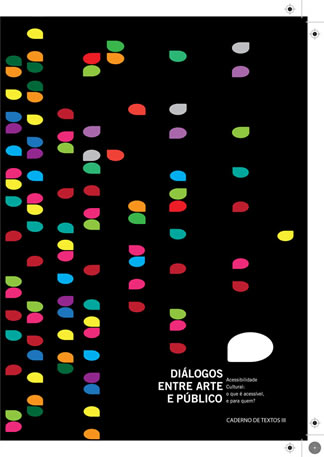

Fundação de Cultura Cidade do Recife
Acessibilidade neste DVD
Artigos em Áudio
Artigos em Libras
Artigos em Texto
Você está em: Artigos em Texto
Apresentação
Editorial
1
A acessibilidade de alguns espaços expositivos de Porto Alegre- Ações e Conquistas
2
Democratização do acesso aos museus-apontamentos sobre ações e políticas públicas para acessibilidade cultural
3
Repensando a acessibilidade em museus-a experiência do Núcleo de Ação Educativa da Pinacoteca do Estado de São Paulo
4
O galo inacessível-da arte e do dever de agradar
5
Acessibilidade e Comunicação Sensorial nos Museus e Espaços Culturais- novos desafios para a mediação cultural
6
Audiodescrição- um novo recurso de mediação e acessibilidade cultural
7
Uma imagem e mil e uma palavras- audiodescrição de obras de arte a deficientes visuais à luz da gramática do design visual
8
Arte, educação e inclusão- orientações para áudio-descrição em museus
9
Como vemos a cegueira- algumas respostas: umas boas, outras não
10
A Arte e o Perceber- Ações e Conquistas
11
Aprender para ensinar - a mediação em museus por meio da Língua Brasileira de Sinais (LIBRAS)
12
A inclusão de públicos especiais em museus- o Programa Educativo para Públicos Especiais da Pinacoteca do Estado de São Paulo
13
Educação profissional de síndrome de down no Instituto Inhotim: fundamentos para mediação inclusiva em arte contemporânea
14
Projeto FotoLibras
15
Arte-educação e as rosas - dialogando com as práticas pedagógicas e a formação dos professores
16
Arte, cotidiano e cultura visual - perspectivas de uma arte/educação dialógica
17
Mecanismos de mediação da obra de arte - possibilitando experiência ou ampliando o acesso à informação?
18
Criança pequena e museu - uma relação possível (e desejada)
19
Observar e compreender: a mediação cultural enquanto registro de uma presença vitalícia no mundo
20
Projeto "Música na Escola" - acesso à educação e à cultura musical
21
Digitalización de danzas folklóricas peruanas en Buenos Aires - los migrantes como "archiveros" del arte
22
A mediação e os educadores - reflexões sobre ações coletivas que tentam legitimar um processo
23
Aprendizes da arte, mediadores e professores - olhares compartilhados?
